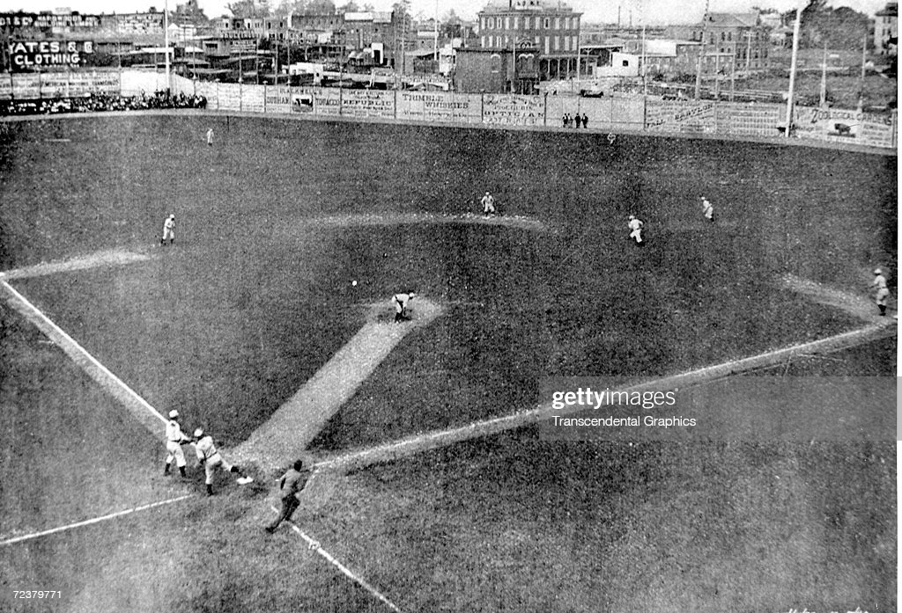
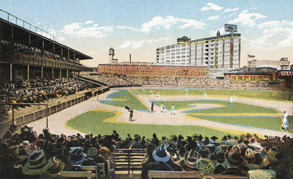
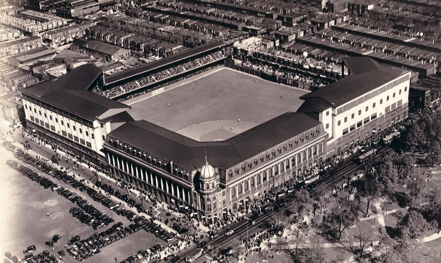
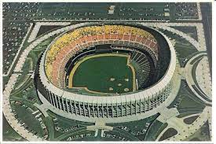
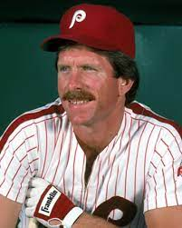
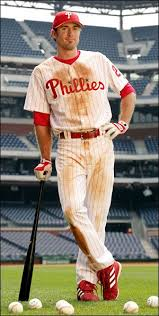
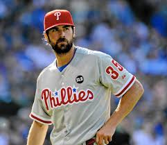
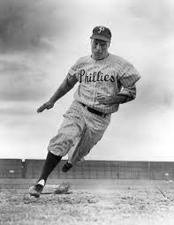
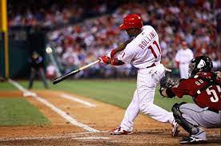

Recreation Park (1883-1886)
The Phillies' very first ballpark! (Probably the worst too.)

Baker Bowl (1887-1938)
Babe Ruth played his final game ever here in 1935. Site of first World Series attended by a U.S. President - Woodrow Wilson in 1915.

Shibe Park (1938-1970)
A.K.A. Connie Mack Stadium. The Phillies shared the park with another MLB team, Philadelphia Athletics.

Veterans Stadium (1971-2003)
Was a Multi-Purpose Stadium; the Philadelphia Eagles football team played there as well.

Citizens Bank Park (2004-Present)
Phillies' current and greatest ever ballpark. One of the most beautiful parks in the MLB, inside and out!

Mike Schmidt
The best Phillie ever. 12 time all-star, 3 time NL MVP. 1980 World Series champ. World Series MVP. The Phillies retired his number, 20. Hit the most home runs in Phillies franchise history, with 548.

Chase Utley
Played for the Phillies from 2003-2015. 2008 World Series Champ; 4 time silver slugger.

Cole Hamels
2008 World Series MVP. Pitched a no-hitter in 2015 before getting traded. Played for the Phillies from 2006-2015.

Richie Ashburn
Spent 12 Seasons with the Phillies from 1948-1959 as a Center Fielder. His number, 1, is retired by the Phils.

Jimmy Rollins
One of the Phillies Best Shortstops; played from 2000-2014 with the Phillies. Appeared in 3 all-star games and won four gold gloves. World series champion in 2008!
